日報週間
日報月間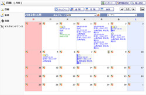
日報 タイムライン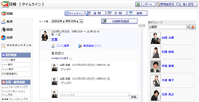
日報一覧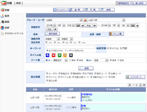
日報登録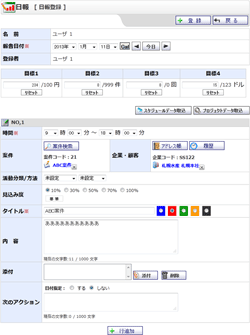
日報確認・編集
案件検索
案件登録
案件確認・編集
目標設定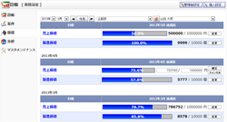
分析(個人)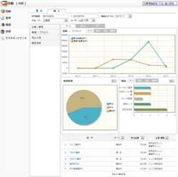
分析(集計)
マスタメンテナンス
商品一覧
商品カテゴリ一覧
商品登録
商品確認・編集
商品カテゴリ登録
商品カテゴリ確認・編集
商品カテゴリ登録確認
業種一覧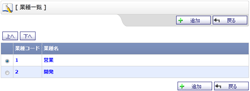
業種登録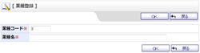
業種確認・編集
プロセス一覧
プロセス登録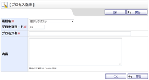
プロセス確認・編集
活動分類一覧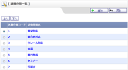
活動分類登録
活動分類確認・編集
活動方法一覧
活動方法登録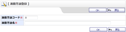
活動方法確認・編集
顧客源泉一覧
顧客源泉登録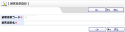
顧客源泉確認・編集
目標一覧
目標登録
目標確認・編集
管理者設定メニュー
基本設定
日報テンプレート一覧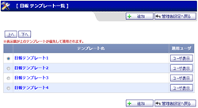
日報テンプレート登録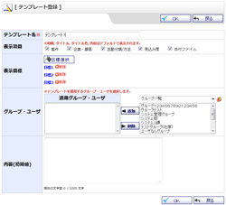
日報テンプレート編集
ショートメール設定
日報インポート（管理者設定）
日報インポート確認（管理者設定）
自動データ削除設定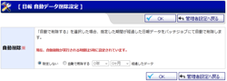
手動データ削除設定
個人設定メニュー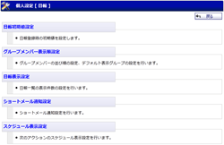
初期値設定
グループメンバー表示設定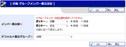
日報表示設定
ショートメール通知設定
日報インポート
日報インポート確認